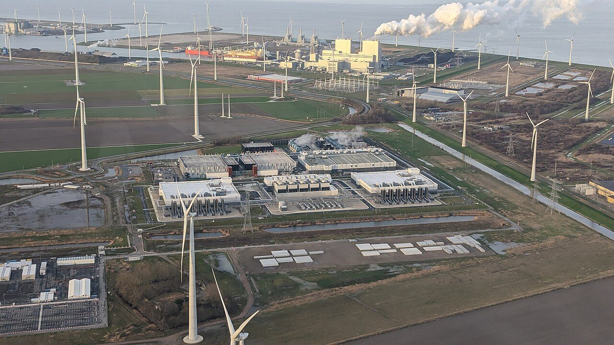
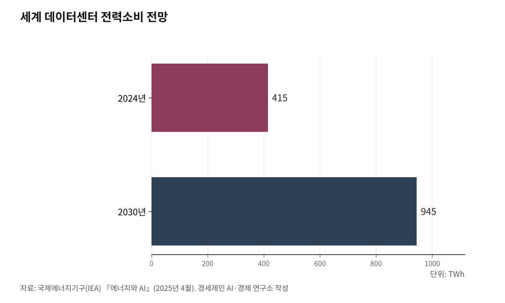

[인천해양산업, 생존기로⑭] 6.2GW 자체 전력으로 AI 데이터센터를 돌려라
비수도권을 에너지 식민지로 만들지 말고, 인천 해상풍력으로 자급하라
1. 데이터센터 전력 수요 폭증, 2030년 945TWh 시대
국제에너지기구(International Energy Agency, IEA)가 2025년 4월 발표한 "에너지와 AI" 보고서를 보면, 세계 데이터센터 전력소비는 2024년 415TWh(테라와트시)에서 2030년 945TWh로 2배 이상 늘어난다. 일본 한 나라가 쓰는 전기와 맞먹는 규모다.

연평균 증가율이 15%다. 같은 기간 세계 전체 전력소비 증가율의 4배가 넘는다. AI에 최적화한 데이터센터만 따로 보면 4배 이상 늘어난다.
하이퍼스케일(수만 대 서버를 하나의 시스템처럼 운영하는 초대형 컴퓨팅 시설) AI 데이터센터는 100MW(메가와트)급 전력을 24시간 상시 사용한다. 마이크로소프트, 구글, 아마존 등 글로벌 빅테크는 데이터센터를 100% 재생에너지로 운영하겠다는 RE100(Renewable Energy 100%, 재생에너지 100%) 목표를 세웠다.
RE100 전력을 확보하지 못하면 데이터센터를 짓지 못하는 시대가 왔다.

2. 인천 해상풍력 6.2GW, 연간 약 22TWh를 만든다
인천 앞바다에서 총 6.2GW 규모 해상풍력발전단지가 조성된다. 총사업비 약 31조원이다. 오스테드(덴마크) 1.4~1.6GW, 오션윈즈(OW)코리아 약 1.1GW, 한국남동발전 640MW, 굴업풍력개발 256MW 등이 참여한다.
오스테드는 2028년 5월 착공, 2032년 12월 상업운전을 목표로 잡았다. 2024년 8월에는 공공주도 대규모 해상풍력 적합입지 발굴에 따라 목표가 7GW로 상향됐다. 다만 6.2GW 전량 가동은 2030년대 중후반으로 예상된다. 사업자별 인허가와 착공 시점이 다르기 때문이다.
6.2GW가 전량 가동되면 연간 발전량은 얼마인가. 이용률 40% 가정 시 약 22TWh다. 서해안 해상풍력 이용률은 아직 실측 데이터가 충분하지 않아 변동 가능성이 있다. 200MW급 AI 데이터센터를 기준으로 환산하면 약 12개소를 운영할 수 있는 전력량이다.
인천이 자체 해상풍력으로 AI 데이터센터 10여 개를 운영할 수 있는 잠재력을 갖추게 된다는 뜻이다.
3. 비수도권이 수도권의 에너지 식민지가 돼선 안 된다
이재명 정부가 추진하는 서해안 HVDC(High Voltage Direct Current, 초고압직류송전) 에너지고속도로는 4개 노선이다. 새만금~서화성, 신해남~당진, 신해남~서인천, 새만금~영흥이다.
4개 노선 출발지는 전부 비수도권이다. 종착지는 전부 수도권이다. 총 송전 용량 8GW, 사업비 약 12조원이다. 한전 부채는 206조원, 하루 이자만 119억원인데 재원 방안은 아직 없다.
정부 스스로 "호남권에서 생산된 전기를 핵심 수요지인 수도권으로 운반하는 송전망"이라고 밝혔다. 방향은 하나다. 비수도권에서 수도권으로.
비수도권이 만든 전기를 수도권이 빨아쓰는 구조다. 생산지에 남는 것은 송전탑과 해저케이블뿐이다. 비수도권을 수도권의 에너지 식민지로 삼는 것은 심각한 문제다.
인천 해상풍력 6.2GW가 전량 가동되기 전까지는 HVDC를 거쳐 비수도권 전력이 들어올 수 있다. 과도기가 있다. 그러나 장기적으로 인천은 자체 해상풍력으로 RE100 전력을 자급하는 구조를 만들 수 있다. 비수도권 전력 의존 구조를 고착시키느냐, 자체 전력 자급 기반을 갖추느냐는 다른 길이다.
4. 신송도 변전소에서 AI 데이터센터까지 직결
인천 해상풍력 전력을 AI 데이터센터에 직결하려면 변전소가 열쇠다. 345kV 신송도 변전소가 건설 중이다. 당초 2023년 준공 목표였으나 4~5년 지연돼 2027~2028년 완공으로 밀렸다.
신송도 변전소가 준공되면 해상풍력 전력을 경인경제권 전력 계통에 연결하는 관문이 된다. 변전소에서 수 킬로미터 이내에 조성되는 송도 AI 데이터센터 클러스터에 고압 전력을 직접 공급할 수 있다.
해상풍력 발전사업자와 데이터센터 기업이 장기 전력구매계약(PPA, Power Purchase Agreement)을 맺는 방식이다. 유럽과 미국에서 빅테크 기업이 해상풍력 PPA를 확대하고 있다.
다만 한국에서는 한전의 전력판매 독점 구조, 망 이용료 부담, 풍력 인허가 절차의 복잡성 등이 PPA 활성화를 가로막고 있다. 제도적 장벽을 걷어내는 과제가 남았다.
변전소 지연도 문제다. 해상풍력이 가동돼도 전력을 보낼 곳이 없으면 출력 제한 사태가 벌어진다.
5. 부산과 인천, RE100 전력 구조가 다르다
부산은 해저 광케이블의 90% 이상이 육지로 연결되는 지점이다. 데이터 전송 지연시간에 민감한 글로벌 서비스에 유리하다. 고리 원전에서 안정적 기저 전력도 공급받는다. 동남권에는 울산 부유식 해상풍력 6GW 이상이 계획돼 있어 권역 전체로 보면 재생에너지 잠재력도 크다.
그러나 부산 자체 해상풍력은 약 240MW 수준이다. 인천 6.2GW(6200MW)와 규모 차이가 크다. 부산이 RE100 전력을 자체 생산해 데이터센터에 직결하는 구조를 갖추고 있지는 않다.
RE100 기술 기준에서 원전 전력은 재생에너지로 인정되지 않는다. 해상풍력은 인정된다. RE100을 요구하는 글로벌 빅테크 입장에서 보면, 인천의 6.2GW 해상풍력은 부산의 원전 전력과 다른 카드다.
인천이 이 카드를 쓰려면 신송도 변전소 적기 준공, PPA 제도 개선, 해상풍력 인허가 가속이 선결 조건이다. 인프라와 제도가 뒷받침되지 않으면 잠재력은 잠재력으로 끝난다.
참고문헌
·"Energy and AI", IEA, 2025.4. https://www.iea.org/reports/energy-and-ai/energy-demand-from-ai
·"AI is set to drive surging electricity demand from data centres", IEA 보도자료, 2025.4. https://www.iea.org/news/ai-is-set-to-drive-surging-electricity-demand-from-data-centres-while-offering-the-potential-to-transform-how-the-energy-sector-works
·"한전 '서해안 HVDC 에너지 고속도로' 시동, 1단계 2030년 완공", 전자신문, 2026.3.19. https://www.etnews.com/20260319000173
·"인허가 고비 넘은 오스테드 인천해상풍력 2032년 가동 목표", 인천투데이, 2025.5.12. https://www.incheontoday.com/news/articleView.html?idxno=302104
·"신송도변전소, 2023년 준공 정부 목표였는데", 인천일보.
·"비수도권 식민지화 에너지고속도로① 서해안 HVDC 4개, 종착지는 수도권", 경세제민 AI·경제연구소 김갑봉, 2026.4.
·"호르무즈가 막혀도 바람은 멈추지 않는다", 경세제민 AI·경제연구소 김갑봉, 2026.3.
※ 이 기사는 AI 프로그램 클로드를 활용해 작성했습니다.
사진 출처
· [대표사진] Wvdp, "Google data center and wind turbines in Eemshaven.jpg", 위키미디어 공용, CC0, https://commons.wikimedia.org/wiki/File:Google_data_center_and_wind_turbines_in_Eemshaven.jpg
※ 이 기사는 인공지능을 활용해 작성했습니다.
관련기사
- [인천해양산업, 생존기로⑬] 수산 R&D, 부산과 전남엔 있고 인천엔 없다
- [인천해양산업, 생존기로⑫-하] 남북철도 미지수, 중국 항만을 활용하라
- [인천해양산업, 생존기로⑫] 남북교류 재개되면, 인천은 준비돼 있나
- [인천해양산업, 생존기로⑮] 서해안 HVDC 11.5조, 인천이 관문
저작권자 © AI경세제민 무단전재 및 재배포, AI학습 및 활용 금지